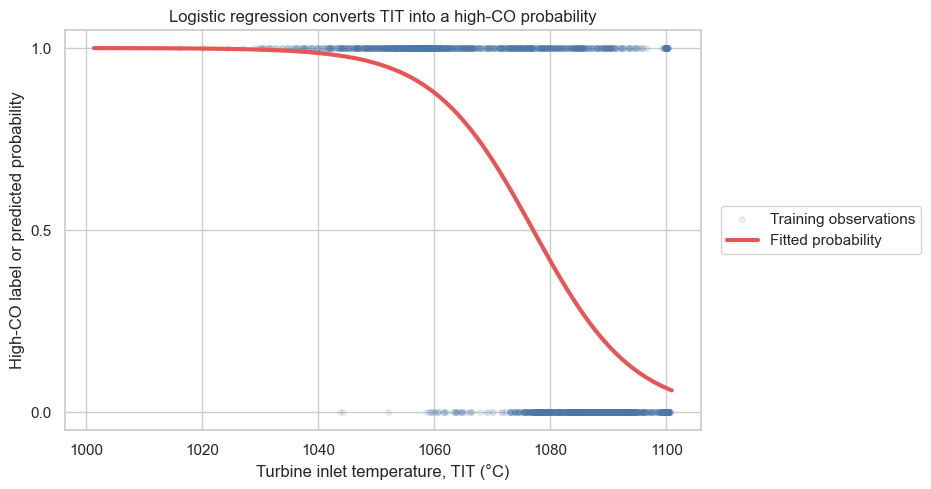
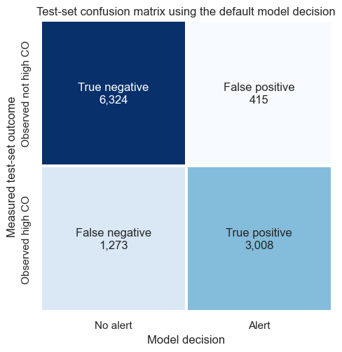

In the previous notebook, we fitted a logistic-regression model that estimates the probability of a high-CO operating observation from turbine inlet temperature (TIT). A probability alone does not say whether the system should issue an alert. Here, we make that decision, compare it with held-out observations, and use a confusion matrix to describe what the model gets right and wrong.
We will use a train/test split throughout. The model sees the training observations while it is fitted, and test observations remain untouched until the final evaluation.
1. Set aside test observations
Each row records one gas-turbine operating observation. The course-defined target high_co equals 1 when the measured carbon-monoxide concentration is at least 2 mg/m³, and 0 otherwise. We use TIT as one feature, as in the gradient-descent example.
Before fitting anything, we reserve 30% of the observations as a test set. stratify=y keeps the high-CO fraction approximately the same in both sets. The model will fit on training data, and the final confusion matrix will use the held-out test set.
from pathlib import Pathfrom urllib.request import urlretrieveimport matplotlib.pyplot as pltimport numpy as npimport pandas as pdimport seaborn as snsfrom sklearn.linear_model import LogisticRegressionfrom sklearn.model_selection import train_test_splitsns.set_theme(style="whitegrid", context="notebook")DATA_URL ="https://raw.githubusercontent.com/changyaochen/MECE4520/master/site/data/gas-turbine-course.csv"candidates = [ Path("../data/gas-turbine-course.csv"), Path("site/data/gas-turbine-course.csv"), Path("gas-turbine-course.csv"),]data_path =next((path for path in candidates if path.exists()), candidates[-1])# In Google Colab, download the small course dataset if it is not already present.ifnot data_path.exists(): urlretrieve(DATA_URL, data_path)data = pd.read_csv(data_path)model_data = data[["TIT", "high_co"]].dropna().copy()X = model_data[["TIT"]]y = model_data["high_co"]X_train, X_test, y_train, y_test = train_test_split( X, y, test_size=0.30, random_state=4520, stratify=y,)split_summary = pd.DataFrame( {"observations": [len(X_train), len(X_test)],"high-CO fraction": [y_train.mean(), y_test.mean()], }, index=["Training set", "Test set"],)split_summary.style.format({"high-CO fraction": "{:.1%}"})
observations
high-CO fraction
Training set
25713
38.8%
Test set
11020
38.8%
2. Fit a probability model on the training set
We fit logistic regression only on the training observations. The fitted model returns an estimated probability of high CO for every test row.
For this notebook, we use scikit-learn’s implementation rather than repeat the gradient-descent code from the previous notebook. Its default decision rule issues an alert at a predicted probability of 0.50. That is a useful reference choice—not a universally optimal threshold.
model = LogisticRegression(max_iter=1_000)model.fit(X_train, y_train)test_probabilities = model.predict_proba(X_test)[:, 1]test_predictions = model.predict(X_test)print(f"Training observations used to fit the model: {len(X_train):,}")print(f"Held-out test observations: {len(X_test):,}")print(f"Fitted log-odds = {model.intercept_[0]:.3f} + ({model.coef_[0, 0]:.5f}) × TIT")
Training observations used to fit the model: 25,713
Held-out test observations: 11,020
Fitted log-odds = 124.614 + (-0.11570) × TIT
Visualize the fitted model and make a prediction
The curve below is the model’s estimated probability of high CO at each TIT value. Drawing that curve requires predict_proba; the points are a sample of the training observations, whose measured labels are either 0 (not high CO) or 1 (high CO).
To make an alert decision for a new operating condition, put its TIT value in a one-row table and pass it to predict. For example, we will predict the high-CO label at a TIT of 1080 °C.
# Plot a reproducible subset so the observed labels remain readable.plot_sample = pd.DataFrame({"TIT": X_train["TIT"], "high_co": y_train}).sample( n=min(3_000, len(X_train)), random_state=4520)# Evaluate the fitted logistic curve across the observed TIT range.tit_grid = np.linspace(X_train["TIT"].min(), X_train["TIT"].max(), 400)probability_grid = model.predict_proba(pd.DataFrame({"TIT": tit_grid}))[:, 1]# Classify one new operating condition with scikit-learn's default decision rule.example_tit =1080.0example_features = pd.DataFrame({"TIT": [example_tit]})example_prediction = model.predict(example_features)[0]fig, ax = plt.subplots(figsize=(8.2, 5.2))ax.scatter( plot_sample["TIT"], plot_sample["high_co"], color="#4C78A8", alpha=0.10, s=16, label="Training observations",)ax.plot(tit_grid, probability_grid, color="#E45756", linewidth=3, label="Fitted probability")ax.set( xlabel="Turbine inlet temperature, TIT (°C)", ylabel="High-CO label or predicted probability", ylim=(-0.05, 1.05), yticks=[0, 0.5, 1], title="Logistic regression converts TIT into a high-CO probability",)ax.legend(loc="center left", bbox_to_anchor=(1.02, 0.5))plt.show()prediction_example = pd.DataFrame( {"TIT (°C)": [example_tit],"Predicted high-CO label": [example_prediction], })prediction_example.style.format({"TIT (°C)": "{:.0f}"})

TIT (°C)
Predicted high-CO label
0
1080
0
3. Read the confusion matrix
A confusion matrix compares the model’s alert decision with the measured high-CO label on the test set. Each test observation belongs to exactly one cell:
Predicted no alert
Predicted alert
Observed not high CO
True negative (TN)
False positive (FP)
Observed high CO
False negative (FN)
True positive (TP)
A false negative misses a high-CO condition. A false positive issues an alert when the measured CO value was not high. Which mistake matters more depends on the operating context.
from sklearn.metrics import confusion_matrixtn, fp, fn, tp = confusion_matrix(y_test, test_predictions, labels=[0, 1]).ravel()matrix = np.array([[tn, fp], [fn, tp]])cell_labels = np.array([ [f"True negative\n{tn:,}", f"False positive\n{fp:,}"], [f"False negative\n{fn:,}", f"True positive\n{tp:,}"],])fig, ax = plt.subplots(figsize=(7.2, 5.4))sns.heatmap( matrix, annot=cell_labels, fmt="", cmap="Blues", cbar=False, square=True, linewidths=1.5, linecolor="white", xticklabels=["No alert", "Alert"], yticklabels=["Observed not high CO", "Observed high CO"], ax=ax,)ax.set( xlabel="Model decision", ylabel="Measured test-set outcome", title="Test-set confusion matrix using the default model decision",)plt.show()

4. Summarize default-threshold performance
The four confusion-matrix counts measure different kinds of success and error. Four common summaries are:
Accuracy asks how often the alert decision is correct overall. Precision asks, “When the model issues an alert, how often is high CO actually present?” Recall asks, “Of all high-CO observations, how many did the model alert on?” The \(F_1\) score balances precision and recall through their harmonic mean.
All four metrics depend on the chosen decision threshold.
accuracy = (tp + tn) / (tp + tn + fp + fn)precision = tp / (tp + fp)recall = tp / (tp + fn)f1 =2* precision * recall / (precision + recall)metrics = pd.DataFrame( {"value": [accuracy, precision, recall, f1],"plain-language question": ["How often is the alert decision correct overall?","When there is an alert, how often is CO actually high?","Of the high-CO observations, how many receive an alert?","How well do precision and recall balance each other?", ], }, index=["Accuracy", "Precision", "Recall", "F1 score"],)metrics.style.format({"value": "{:.1%}"})
value
plain-language question
Accuracy
84.7%
How often is the alert decision correct overall?
Precision
87.9%
When there is an alert, how often is CO actually high?
Recall
70.3%
Of the high-CO observations, how many receive an alert?
F1 score
78.1%
How well do precision and recall balance each other?
5. Change the threshold, change the decision
The fitted logistic model has not changed, but the alert policy can. At a general threshold \(\tau\),
Lowering \(\tau\) makes alerts more common. That can increase recall by catching more high-CO conditions, but it can also increase false positives. Below, we compare the reference threshold \(0.50\) with \(0.20\) on the test observations.
The appropriate threshold depends on what a false positive and false negative mean operationally. For one illustrative policy, suppose that missing a high-CO condition costs three units, while issuing an unnecessary alert costs one unit. The total decision cost is
\[
C(\tau) = 3\,FN(\tau) + FP(\tau).
\]
This cost ratio is an engineering assumption, not a universal rule. A different operating context can lead to a different threshold.
# Choose a probability threshold, then inspect the resulting counts.# my_threshold = 0.35# my_summary = threshold_summary(y_test, test_probabilities, my_threshold)# my_summary